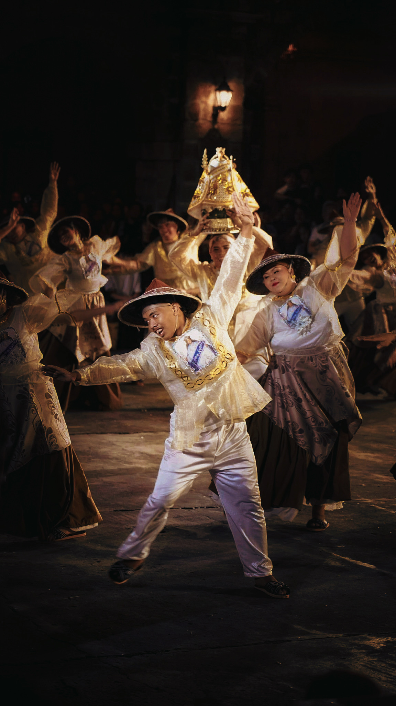
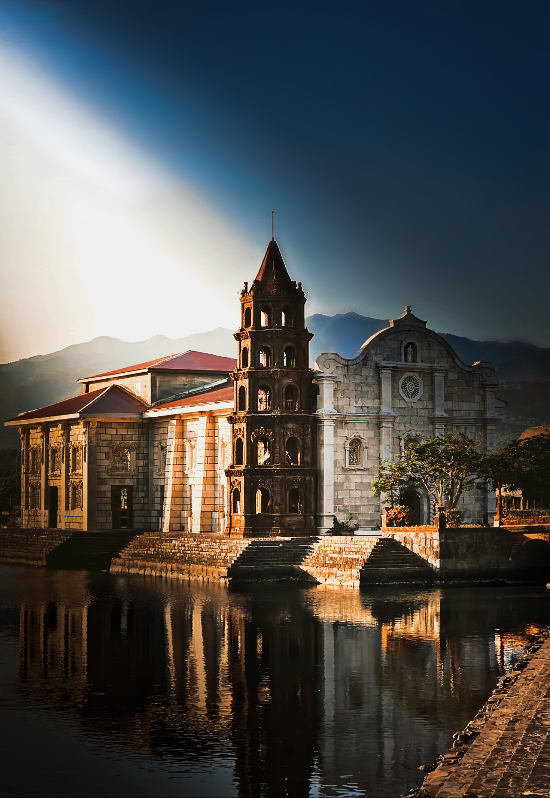
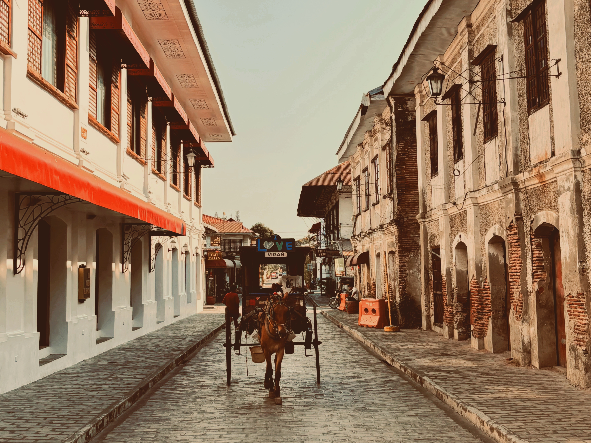
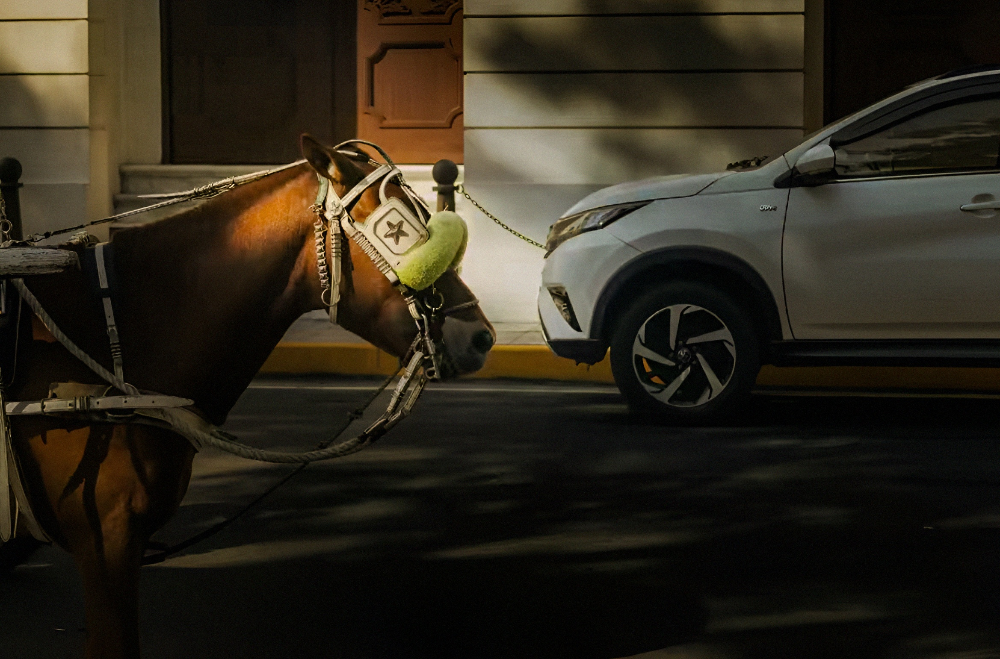
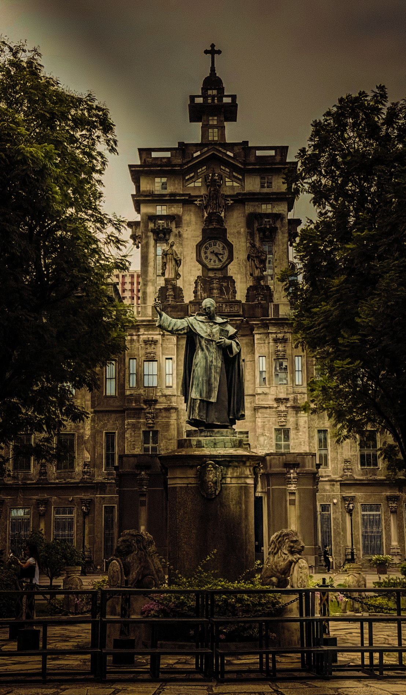
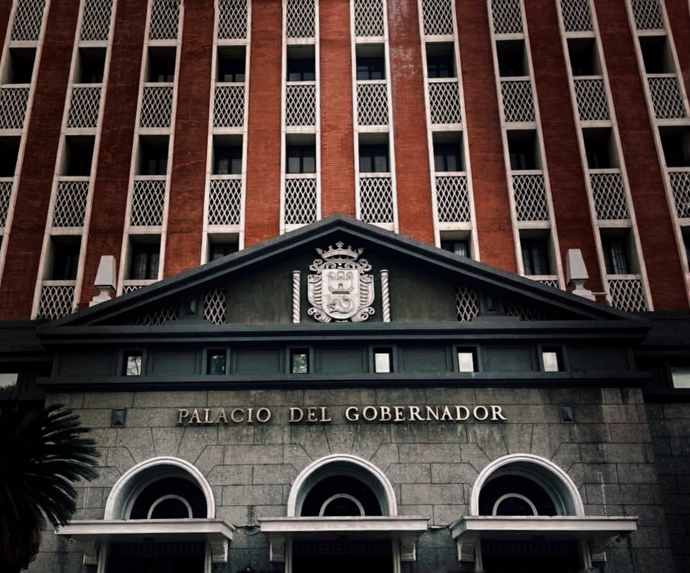
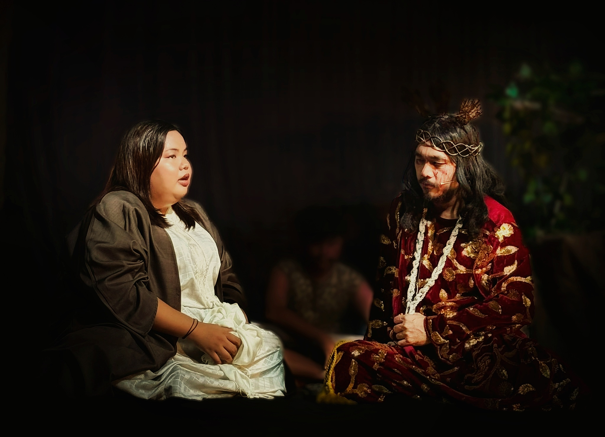
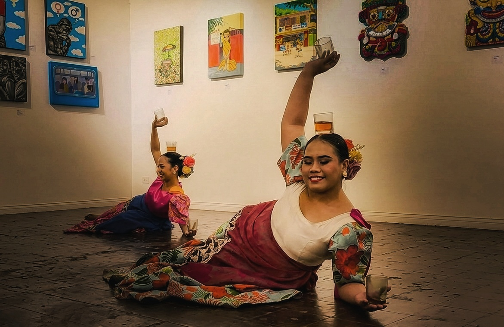

Culture - Cultura
The Spanish Colonial Period greatly influenced Filipino culture through architecture, religion, traditions, language, and social customs that are still practiced today. Celebrations such as fiestas, religious processions, and family-centered values reflect the lasting impact of Spanish heritage on everyday life. These cultural influences blended with native traditions, creating the unique identity of the Filipino people.

This photo shows a traditional dance called “Pandangguhan,” performed during the feast of Sta. Martha in Pateros, a competition between the 10 baranggays, which was held last February 7, 2026. This photo was captured by Erin Salonga at Pateros Church. The festival happens every second week of February and celebrates culture, faith, and community through music and dance.

Step back in time and experience the captivating beauty of old Philippines at Las Casas Filipinas de Acuzar, where a church and bell tower are reflected in the river during the late afternoon in Bagac, Bataan. This heritage site showcases original Spanish-Filipino colonial structures, captured by Divine Ginez on March 21, 2026.

A kalesa driver guides a horse-drawn carriage along Calle Crisologo in Vigan on April 6, 2026, passing well-preserved Spanish colonial-era houses. The traditional transport continues to operate in the city’s UNESCO listed historic district.

This image, taken by Marie Diane Acma on April 8, 2026, shows a remarkable image in Manila's historic walled city of Intramuros, which was founded in 1571 during the Spanish colonial era. At its center stands a horse in full harness as part of a traditional kalesa beside a modern car, with the colonial‑style building and paved street in the backdrop emphasizing the enduring blend of Spanish‑era heritage and contemporary urban development.

Admire the grandeur of the University of Santo Tomas Main Building, a historic structure that stands as a testament to the university’s rich academic heritage and resilience through time. Known as one of the oldest university buildings in the Philippines, it has witnessed significant historical events, including serving as an internment camp during World War II. As the central landmark of the oldest existing university in Asia, it reflects a blend of neoclassical architecture and enduring Thomasian tradition.

Standing in the historic heart of Intramuros, Manila, the Palacio del Gobernador rises on the site of the former Spanish colonial governor-general’s residence. Destroyed during World War II and rebuilt in 1976, it now serves as a government center for administrative and public service under government institutions. The building features formal architecture and arched entrances. it was captured by Danell Caong on March 31, 2026.

A powerful moment from the annual Senakulo 2026 in Bagumbayan, Taguig City on April 4, 2026 brings to life a traditional Holy Week reenactment of the encounter between Veronica and Jesus on His way to Calvary, reflecting faith, sacrifice, and devotion deeply rooted in Filipino culture. Captured by Eirine Sixto, the image shows Veronica compassionately wiping the face of Jesus with her veil as He carries the cross.

Witness a graceful cultural performance by the La Manila Dance Ambassador and Rondalla as they showcase Pangdanggo sa Ilaw during the Escolta Art Exchange event, a celebration of heritage and creativity in Manila’s historic district. This traditional dance, performed with lit candles, reflects Spanish colonial influence and Filipino artistry through music, movement, and storytelling. Captured by Bea Macadangdang on March 21, 2026